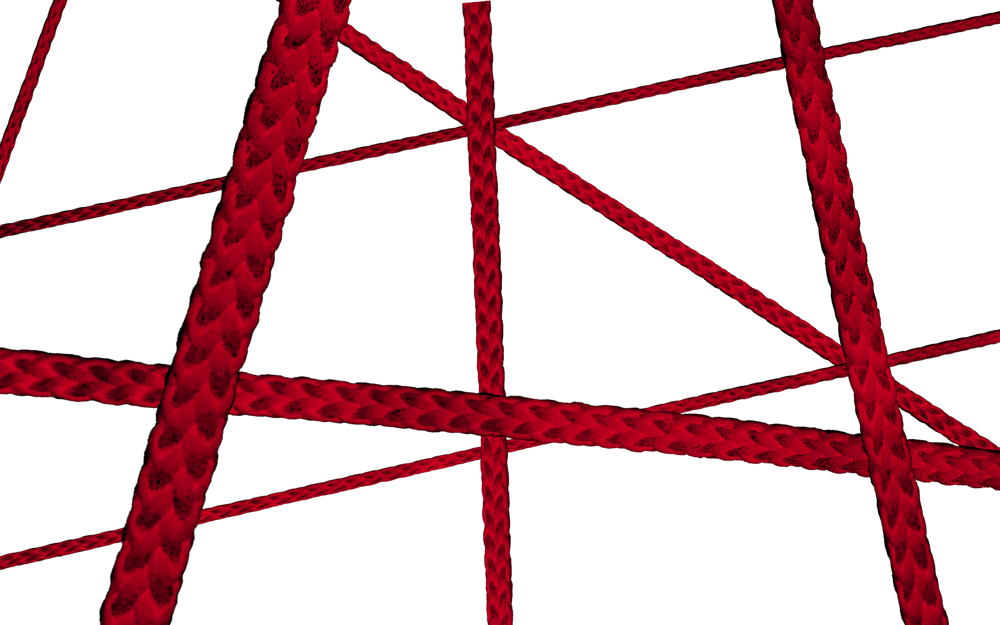

As human beings, our experiences of the world are shaped fundamentally by the design of our inhabited spaces. Communal areas often include barriers to mediate behavior, enforcing a stable society by upholding laws and preventing damage to property or life. These barriers, however, are not always hard and fast walls, doors, locks, or traffic barricades; in fact, they just as often take the forms of threatening shapes, bright colors and non-permanent structures used to signal rather than enforce proper behavior. This project seeks to probe the boundary between these two categories of barrier through the creation of a highly flexible installation whose meaning reacts to its context.
The Project
The Project
The installation features a small doorway with yarn strung inside its threshold. Though people can now no longer walk through the door normally, they can still pass by crawling or stepping through open spaces. The bright color of the yarn mimics the palettes of warning signs and construction equipment while the sharp, triangular shapes created by the intersecting strings mimic points of low fences, all common “mental” barriers. The yarn itself is also soft, slightly elastic, and easily destroyed with proper tools, making it necessarily temporary. However, the installation creates a very real barrier to traffic that cannot easily be crossed. These properties blend “physical” and “mental” deterrents, resulting in a hybrid barrier.

Implications
Implications
This piece focuses on the idea of the mental blockade as a force just strong as a physical one. Who may try to cross through the yarn? How many people will be around, and of what race or class? Where does the doorway lead? An installation set up in a public square varies widely from one in the entrance of a high-end clothing store, museum, or government building. The idea may also be varied to allow for audience participation in building or destroying the wall, or to allow for dismantling from one side only. The installation’s ease of construction allows it to crop up anywhere, placing the idea of mental and social blockades in a wide variety of contexts for analysis.